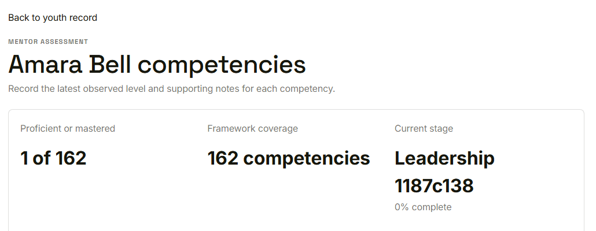
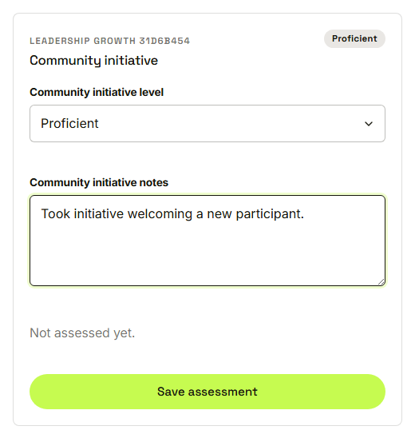
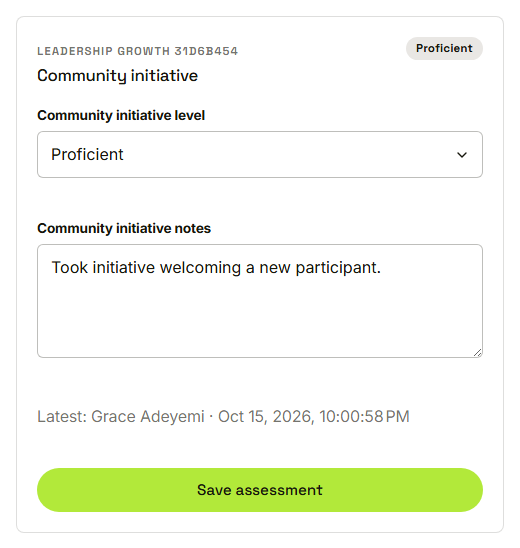
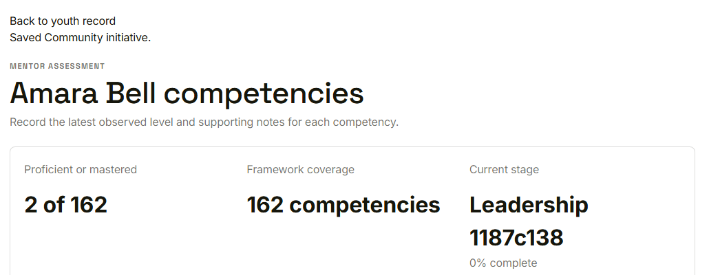

Waypoint · Video 052
Assessing competencies
The mentor decides how far along each youth is
The competency tracker

Summary of proficient or mastered competencies
A level and a note

Level and notes for one competency
Saved with name and time

The latest assessment names the mentor
The count goes up

The summary reflects the saved assessment
Things to remember
Four levels, from Not started to Mastered, plus notes
Each saved assessment keeps the mentor and the time
The summary count updates on save
Youth progress and reports show the latest assessment